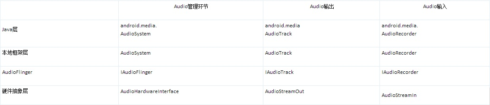

Android的Audio系统之一
介绍Android的音频系统内容，主要是音频的输入/输出环节，不涉及编解码的内容（音频系统从驱动程序、本地框架到Java框架都具有内容）。介绍Audio系统各个层次的内容、Audio硬件抽象层的实现。
在学习的过程中，应重点关注以下内容：
Audio系统结构（知识性内容）在Java中调用Audio系统的方式（知识性内容）
Audio系统本地代码的接口（开发要点）
Audio硬件抽象层的实现（开发要点）
Audio系统综述
Audio系统在Android中负责音频方面的数据流传输和控制功能，也负责音频设备的管理。这个部分作为Android的Audio系统的输入/输出层次，一般负责播放PCM声音输出和从外部获取PCM声音，以及管理声音设备和设置。
Audio系统主要分成如下几个层次：
（1）media库提供的Audio系统本地部分接口；
（2）AudioFlinger作为Audio系统的中间层；
（3）Audio的硬件抽象层提供底层支持；
（4）Audio接口通过JNI和Java框架提供给上层。
Audio系统的各个层次接口主要提供了两方面功能：放音（Track）和录音（Recorder）。
Android的Audio系统结构如图1所示。

图1 Android的Audio系统结构
Android系统的代码分布情况如下所示：
（1）Audio的Java部分
代码路径：frameworks/base/media/java/android/media
与Audio相关的Java包是android.media，主要包含AudioManager和Audio系统的几个类。
（2）Audio的JNI部分
代码路径：frameworks/base/core/jni
生成库libandroid_runtime.so，Audio的JNI是其中的一个部分。
（3）Audio的框架部分
头文件路径：frameworks/base/include/media/
源代码路径：frameworks/base/media/libmedia/
Audio本地框架是media库的一部分，本部分内容被编译成库libmedia.so，提供Audio部分的接口（包括基于Binder的IPC机制）。
（4）Audio Flinger
代码路径：frameworks/base/libs/audioflinger
这部分内容被编译成库libaudioflinger.so，它是Audio系统的本地服务部分。
（5）Audio的硬件抽象层接口
头文件路径：hardware/libhardware_legacy/include/hardware/
Audio硬件抽象层的实现在各个系统中可能是不同的，需要使用代码去继承相应的类并实现它们，作为Android系统本地框架层和驱动程序接口。
Audio系统和上层接口
在Android中，Audio系统自上而下由Java的Audio类、Audio本地框架类、AudioFlinger和Audio的硬件抽象层几个部分组成。
Audio系统的各个层次
Audio系统的各层次情况如下所示。
Audio本地框架类是libmedia.so的一个部分，这些Audio接口对上层提供接口，由下层的本地代码去实现。
AudioFlinger继承libmeida中的接口，提供实现库libaudiofilnger.so。这部分内容没有自己的对外头文件，上层调用的只是libmedia本部分的接口，但实际调用的内容是libaudioflinger.so。
Audio使用JNI和Java对上层提供接口，JNI部分通过调用libmedia库提供的接口来实现。
Audio的硬件抽象层提供到硬件的接口，供AudioFlinger调用。Audio的硬件抽象层实际上是各个平台开发过程中需要主要关注和独立完成的部分。
提示：Android的Audio系统不涉及编解码环节，只是负责上层系统和底层Audio硬件的交互，一般以PCM作为输入/输出格式。
在Android的Audio系统中，无论上层还是下层，都使用一个管理类和输出输入两个类来表示整个Audio系统，输出输入两个类负责数据通道。在各个层次之间具有对应关系，如表1所示所示。
Android各个层次的对应关系
